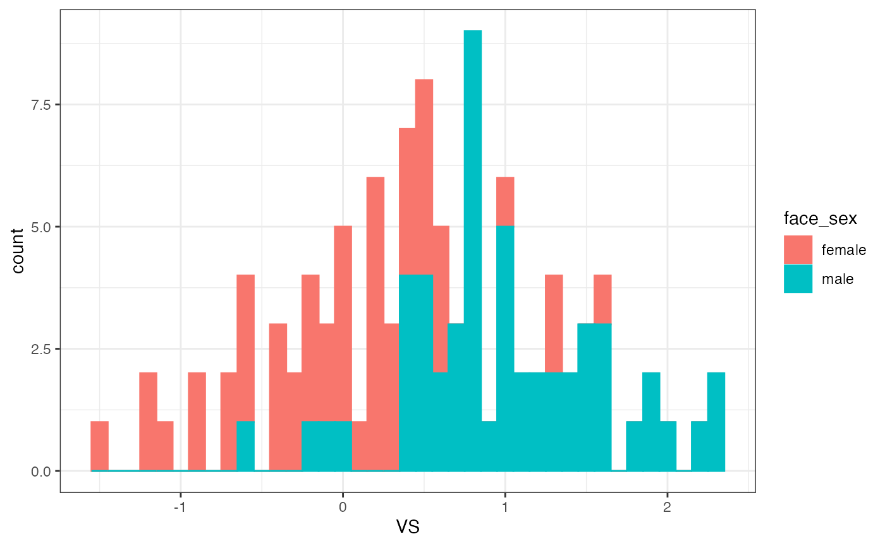

WORK IN PROGRESS
This tutorial will explain how to calculate facial sexual dimorphism (SD) in a set of 2D faces, using (1) a vector method (REF) and (2) linear discriminant analysis.
[Explain what these are/how they differ, references etc.]
Read and prep landmark data
path_to_tem <- system.file("extdata", "tem", package="facefuns")
remove_points <- c(45:50, 100:104, 116:125, 146:158, 159:164, 165:170, 171:174, 175:179, 184:185)
data <- read_lmdata(lmdata = path_to_tem,
remove_points = remove_points,
plot = FALSE)
shapedata <- quickstart(data = data,
pc_criterion = "broken_stick",
plot_sample = FALSE)
#> The loaded data set contains 102 specimen, delineated with 132 2-D landmarks.
#> The broken_stick criterion was used to select 8 principal components.
#> Templates were rotated using "rotateC" after the GPA.In addition, we’ll also need to know which of the faces in our sample are female, and which are male.
Vector scores: calc(shape)VS
facefuns::calcVS calculates sexual dimorphism by computing an n-dimensional vector between the average female and the average male shape, and then projecting each face onto this vector. Scores are scaled so that a score of 0 corresponds to the average female, and a score of 1 to the average male shape; a negative score, e.g., would thus indicate a hyperfeminine face.
You can use calcVS to calculate vector scores from a data frame or matrix of principal component scores (see help(calcVS)), or calcShapeVS to calculate them from the Procrustes-aligned templates in the quickstart output.
calcShapeVS takes three arguments, all of which should be a data frame or matrix with specimen as rows, and PC scores as columns:
-
quickstart_obj: Output fromfacefuns::quickstart -
anchor1_index: Vector specifying indices of faces that will constitute lower anchor point
-
anchor2_index: Vector specifying indices of faces that will constitute upper anchor point
We get the index of which faces in our array of Procrustes-aligned faces are female/male by testing which IDs have a corresponding entry in the info table for which sex == female/male
fem_i <- gsub("^ID=","", dimnames(shapedata$array)[[3]]) %in%
LondonSet_info$face_id[which(LondonSet_info$face_sex == "female")]
mal_i <- gsub("^ID=", "", dimnames(shapedata$array)[[3]]) %in%
LondonSet_info$face_id[which(LondonSet_info$face_sex == "male")]Now, we can run our function:
sd_vector <- calcShapeVS(shapedata, fem_i, mal_i)calc(Shape)VS will return a tibble that has two columns, id and VS:
head(sd_vector)
#> # A tibble: 6 x 2
#> id VS
#> <chr> <dbl>
#> 1 001 -1.06
#> 2 002 0.00299
#> 3 003 -0.250
#> 4 004 0.855
#> 5 005 0.548
#> 6 006 0.582
LondonSet_info %>%
dplyr::left_join(sd_vector, by = c("face_id" = "id")) %>%
ggplot(aes(x = VS, color=face_sex, fill = face_sex)) +
geom_histogram(binwidth = .1) +
theme_bw()
Note: calculating vector scores within- and out-of-set
[explain you could also do this out-of-set; if your current sample is small, but you have a larger sample at hand that was delineated with the same landmarks or a compatible sub-/superset, you could use that bigger sample to build shape PCA model and construct vector, and then project faces from smaller sample onto it]
Note: calculating sexual dimorphism from symmetrized faces
[References and critical notes - basically, 2D images are strongly affected by head posture, which is reflected in the fact that in 2D sets, the first two principal components usually show shape associated with heads being tilted up/down, or heads being turned left/right. We can’t do much about up/down (plus shape differences associated with up/down overlaps with those of sexual dimorphism), but left/right COULD be “remedied” by symmetrizing faces.]
There are two ways to go about this: either just symmetrize templates before submitting them to quickstart (which has the added benefit that it’s very little fuss to plot the PCs on which the scores are based); or by using the option symmetrize in calcShapeVS.
Symmetrizing works by mirroring each landmark template, and calculating the mean between the original and mirrored template. After mirroring, the landmarks need to be relabeled - corresponding landmarks need to be on the same line in each template, but what used to be point 0 (right pupil) in the original template, is point 1 (the left pupil) after mirroring.
Unfortunately, this information needs to be manually entered, and will very much depend on the landmark template you want to mirror! For the set of 132 landmarks used throughout the examples in facefuns, this info is stored in mirr_lms.
If symm=TRUE, calcShapeVS will first symmetrize the faces, re-conduct a GPA and PCA on these symmetrized templates, and then run calcVS.
data("mirr_lms")
sd_vector_symm <- calcShapeVS(shapedata, fem_i, mal_i, symm = TRUE, mirr_lms = mirr_lms)
head(sd_vector_symm)
#> # A tibble: 6 x 2
#> id VS
#> <chr> <dbl>
#> 1 001 -0.990
#> 2 002 0.121
#> 3 003 -0.205
#> 4 004 0.748
#> 5 005 0.555
#> 6 006 0.526
LondonSet_info %>%
dplyr::left_join(sd_vector_symm, by = c("face_id" = "id")) %>%
ggplot(aes(x = VS, color=face_sex, fill = face_sex)) +
geom_histogram(binwidth = .1) +
theme_bw()
Discriminant scores: calcDS
Another way to calculate sexual dimorphism is by employing a linear discriminant analyses to predict group membership.
calcVS first conducts a (forward) stepwise variable selection and then carries out a linear discriminant analysis. It takes two arguments:
-
data: A data frame or matrix with specimen as rows, and PCs as columns. Can also contain an additional column that defines group membership. -
group_info: Either a data frame with two columns (col 1 = id matching the rownames in data; col 2 = group), or a single numeric value indexing the column in data that contains group membership info
For this example, we’ll specify group membership with a separate data frame.
group_info <- LondonSet_info %>%
dplyr::select(face_id, face_sex)
sd_discrim <- calcDS(shapedata$pc_scores, group_info = group_info)Like calcVS, calcDS will return a tibble that has two columns, in this case id and DS:
head(sd_discrim)Compare vector and discriminant scores
compareSD <- LondonSet_info %>%
dplyr::left_join(sd_vector, by = c("face_id" = "id")) %>%
dplyr::left_join(sd_discrim, by = c("face_id" = "id"))
compareSD %>%
dplyr::group_by(face_sex) %>%
dplyr::summarise(mean_vs = round(mean(VS), 3),
mean_ds = round(mean(DS), 3))
#> # A tibble: 2 x 3
#> face_sex mean_vs mean_ds
#> <chr> <dbl> <dbl>
#> 1 female 0 -1.45
#> 2 male 1 1.34
compareSD %>%
ggplot(aes(x = VS, y = DS)) +
geom_point(aes(color = face_sex)) +
geom_smooth(method='lm', formula = y ~ x, color = "purple") +
theme_bw()Visualize differences
Pull lowest- and highest-scoring individuals and plot difference between them
[Tidy this up!!]
lo_vs <- compareSD %>%
dplyr::slice_min(VS, n=5) %>%
dplyr::pull(face_id)
lo_ds <- compareSD %>%
dplyr::slice_min(DS, n=5) %>%
dplyr::pull(face_id)
hi_vs <- compareSD %>%
dplyr::slice_max(VS, n=5) %>%
dplyr::pull(face_id)
hi_ds <- compareSD %>%
dplyr::slice_max(DS, n=10) %>%
dplyr::pull(face_id)
lo_vs_faces <- geomorph::mshape(shapedata$array[,,lo_vs])
lo_ds_faces <- geomorph::mshape(shapedata$array[,,lo_ds])
hi_vs_faces <- geomorph::mshape(shapedata$array[,,hi_vs])
hi_ds_faces <- geomorph::mshape(shapedata$array[,,hi_ds])
plotl <- list(lo_vs_faces, lo_ds_faces, hi_vs_faces, hi_ds_faces)
ref <- shapedata$average
plot_list <- rapply(plotl, function(x) {
function() { geomorph::plotRefToTarget(ref, x, mag=1.5) }
}, how = "list")
do.call(cowplot::plot_grid, c(plot_list, list(ncol = 2)))Top left: low vector score, top right: low discriminant score Bottom left: high vector score, bottom right: high discriminant score